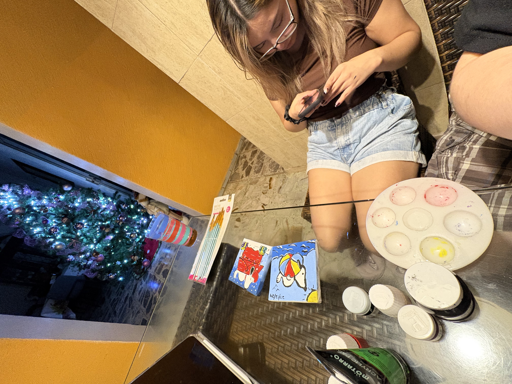

Para mi amada Sarita:
Bienvenida a tú página tributo, hecha por mí para tí, es un recopilatorio de diferentes vivencias nuestras que atesoro de manera permanente en mis recuerdos y que quiero que veas de la misma manera que yo a través de mis ojos y relatos.
Marzo 2024
Te invité a salir por primera vez, dijiste que si, tengo que confesar que me encontraba nervioso al respecto.
Antes de hacerlo pensaba que eras rara, pero con el tiempo me empecé a sentir atraído por tí, te observaba de lejos y pensaba en lo linda que eres desde ese momento.

Salimos algunas veces, tengo que admitir que me asombraba tú facilidad para hablar con casi soltura total, me gustó.
Nos dimos nuestro primer beso un 22 de marzo, le tengo tanto aprecio y cariño a ese día que quería tenerlo guardado de alguna forma física, está presente en mi reloj, marcando la hora y el día en que sucedió.
Me hiciste el hombre más feliz del mundo ese día.

(Quisiera tener fotos de aquellas salidas, pero no las tengo :c)
Abril 2024
El hombre más feliz del mundo invitó a la mujer más bella a ver una película a su casa.
Francamente pensé que rechazarías la invitación, pero me demostraste que me equivocaba, vimos "Así en la tierra como en el infierno" (buena película).
Recuerdo que me hiciste unas preguntas "incómodas" mientras jugábamos Plato, pensaba mucho como contestarlas porque buscaba ser preciso con mis respuestas, me daba un poco de pena la verdad.
Mayo 2024
Tengo buenos recuerdos de mayo, terminé de ver Avatar solo porque vimos un par de capitulos del live action jiji.
El 2 de mayo, estuvimos en la feria, no hicimos mucho, supongo que debido a la timidez de ambos o la falta de iniciativa solo subimos a la rueda de la fortuna y poco más, vimos los caballos y entramos a la carpa del circo, mi recuerdo favorito de aquel día es la foto tuya con el Beto.

Fuimos al cine, el 16 de ese mes, conversamos un rato, no recuerdo que película vimos, creo que Garfield :c.
Ese día te llevé a tú casa demasiado tarde, pasadas las 12, me sentí mal por eso, no quería causarle una mala impresión a tú mamá, pero por otro lado me encontraba muy feliz por haber pasado mucho tiempo contigo.
"¿Qué es lo que me gusta de Saray y que es lo que le gusta a ella de mí?"
Fue una pregunta que se me planteó hacerme y hacerte, y es la misma pregunta que reflexioné y que ahora posees en mis cartas, para ese entonces ya estaba enamorado de tí, y me enamoré aún más con mis conclusiones.
El último día de mayo, fuimos a comer boneless ahí al monkey papas xd, también fuimos al parque, le tengo mucho cariño a las fotos que te tomé en el sube y baja c:.


Junio 2024
Fuimos a cenar, esa noche era el último día de las 50 preguntas, la gracia de las preguntas eran conocerte mejor, en un inicio no ideé que tú pudieras hacerme las mismas preguntas, pero igual sentía que era de utilidad para ambos, la última pregunta era, si querías ser mi novia, batallé mucho para formular esa pregunta aunque parezca sencilla, no sabía como decirlo o si eran las palabras correctas, hay muchas variantes, decidí no pensarlo mucho, pensé que cuando llegara a la pregunta 50 improvisaría.
Creo que ya te hacías a la idea de lo que significaba la última pregunta, era algo que yo veía como una obviedad, pero igual quería hacerlo, como una manera de seguir con la línea limite de los dichosos 3 meses.
Llegada la hora, salimos del restaurante, yo ya tenía planeado pedirlo al salir del lugar.
Te pregunté si querías ser mi novia, dijiste que sí.
Sentí una mezcla de muchas emociones: felicidad, alivio, tranquilidad, ansiedad, miedo, muchas otras, pero sobre todas imperaba la sensación de logro.
No puedo negar que la incertidumbre de saber que iba a pasar con nosotros durante esos tres meses me tenían bastante preocupado, a merced de la expectativa de lo que podría haber sido algo perecedero o algo duradero, pero con la paciencia de saber que pasaría al final.
Pero tú respuesta fue sí, no pude sino celebrar en mi cabeza con el cocktail de emociones positivas que recorrían y aún recorren mi cuerpo.
Tú no lo sabes, pero cuando regresé a mi casa brinqué de alegría al bajarme del carro, no se me olvidará que me fuí a dormir con una sonrisota en la cara.

Julio 2024
Tú cumpleaños n° 19, estaba bastante nervioso porque me habías dicho que iba a conocer a tú mamá y a tú hermano en persona, hasta ese momento solo los conocía por lo que me habías dicho y mostrado de ellos.
Ese día traías el Pou triste, lo llevaste a "jugar" billar.

Tengo muy marcado que ese día me andaba muriendo de pena porque me trajeron hasta mi casa :c.
Un 10 de julio viniste a mi casa a ver la velada de Ibai, era más un plan tuyo con Mariana, a mí realmente no me interesaba mucho ver las peleas, pero no me importaba con tal de pasar tiempo contigo.
No se me olvida que ese mismo día me hiciste firmar el papel ese para correr al rector; no es reclamo.

Hago una pausa para decirte lo mucho que me emociona cuando me mandas fotos tuyas, no sabes lo extasiado que me pone, tengo un recuerdo particular de una foto que me enviaste un día a mediados de julio, que intuí era en prichos, la subí a mis estados y de manera espontánea me contestó una tía al pie del estado donde te decía "pricholover" y que me remarcó que te cambiara el apodo, le tengo mucho amor a esa foto.

Agosto 2024
Un 4 de agosto fuimos al parque, no sabes como amé de una manera extraña el verte manchada de nutella mientras te comías una marquesita, me generó mucha ternura, me sigo sintiendo muy apenado por el incidente del flash y como te dió en toda la cara de repente.

Aparecen en escena los aretes de cigarros, me gustan mucho jiji; en la foto solo se ven los aros y los de UNO, pero es porque ya tenías puestos los de cigarro.

El 9 de agosto me operaron, se me hizo muy gracioso el hecho de que a pesar de estar todavía anestesiado de una pierna y con un hambre considerable, tuve cabeza para conseguir una cajita feliz con el peluche del pompompurin, francamente, es de los que más me gustaron de los personajes, aunque a mí pesar, no conseguí el My Melody y el Cinnamoroll; todos para tí, igual está bonito el pompompurin de Exodia.

14 de agosto, cumplimos 2 meses, esa mañana le pedí de encargo a mi abuela que consiguiera el chocolatín antes de que llegara de clases; afortunadamente lo consiguió, ese día yo salía más tarde que tú, y me esperaste en mi casa, mi abuela y tú vieron televisión juntas, se me hizo bastante bonito y preocupante, regresé a mi casa, me regalaste el graduosito que tanto me recuerda a tí, y la caja con tus besos grabados, la cual tengo expuesta con orgullo en mi cuarto, a forma de un recuerdo placentero de ese día, en su interior se encontraba el proyector de estrellas, comimos del pastel, y pasamos el resto de la tarde juntos, mi actividad favorita, pasar el día contigo.

Septiembre 2024
Un 5 de septiembre pasaste la tarde en mi casa, al traerte de regreso fuimos por esquites, tú siempre tan fan del chile piquín hasta el punto de convertirlo en caldo de chile con granos de elote; una foto que le mandé a tú mamá con tú esquite.

No se me olvida que ese mes cumpliamos 3 meses, quería ser más expresivo con mi regalo, llevaba días escribiendo unas cartas que englobaban a un pensamiento que tenía cuando estábamos saliendo, algo que escribí en mi diario a modo de pensamiento introspectivo, y que quería que tuvieras algún día.
Planifiqué explayarme todo lo que yo quisiera, en pos de demostrarte con letras una parte de mi amor por tí, escribir las cartas fue desde luego difícil, me equivocaba con algunas letras y mi caligrafía dejaba mucho que desear, quería que fuera perfecto, a mí manera, tal vez y no soy mucho de detalles emocionales, me cuesta mucho maquinar ideas que sean sorprendentes creativamente hablando, soy muy soso en ese aspecto, y lo reconozco, pero quería hacer algo bonito para tí, me solté a escribir desde lo más profundo de mí las cosas más puras que siento por tí, la idea de las fotos se me ocurrió después, a medida que escribía la carta, caí en cuenta de las conclusiones de cada párrafo, y quería que cada foto tuviera como pie de página el pensamiento final de cada párrafo puesto en cada foto.
Me esforcé genuinamente por hacer mi mejor "letra", pero he de admitir que no tengo una buena caligrafía, escogí las fotos que creí te gustarían más y que representaran el mensaje de la carta.
Entregarlo el 14 de agosto; día de nuestro tercer mes, era la meta, invitarte a cenar parte del plan, y entregártelo en la puerta de tú casa, la conclusión, quería mantenerte lo más alejada del sobre, necesitaba que lo leyeras en tú intimidad, sin apuros.
Leíste las cartas y nada me hizo más feliz que saber que te gustaron, realmente me sentía nervioso porque pensaba que tal vez y fuí demasiado intenso con el mensaje, pero me alegró haberme equivocado.
Me encanta saber que te hice feliz con ese detalle, como agradecimiento por la felicidad que me habías brindado en esos 3 meses.


Un 17 de septiembre, me encontraba enfermo, me acompañaste a que me recetaran medicamentos y me picaran de paso, me hizo sentir bastante halagado que me acompañaras; aunque dentro de la consulta estuvieras seriesota.

El 21 de septiembre hicimos nuestra primera pijamada, unos días antes, el 19, habíamos ido a hacer algunas compras para la velada, los pants compartidos, unas tazas, las mascarillas, etc.
Fuí por tí a tú casa en la noche, compramos la cena, vimos un poco de Juego de Tronos y dormimos juntos hasta el amanecer por primera vez.
Despertar y ser lo primero que mis ojos vieran por la mañana fue como seguir dentro de un sueño.
Me sentí muy triste cuando te dejé de nuevo en tú casa, volver a dormir sin tí me daba una pesadumbre que no te imaginas.
Al día siguiente, el 22 de septiembre, mi papá cumplía años, fuí por tí a City Center, tuviste la idea de que me pusiera la botarga e hiciera una entrada sorpresa, no estaba muy convencido honestamente, pero lo hice porque no me sentía cómodo negándome a una petición tuya, ejecutamos el plan y resultó en un bonito recuerdo, no me arrepiento de haberte hecho caso.

Octubre 2024
Octubre empezó de la manera más bonita que me podía imaginar, me regalaste un envoltorio, dentro, y para mi sorpresa, puesto a que no lo sospechaba en lo absoluto, venía en su interior una camisa, con un impreso de varias fotos de nosotros, camisa que a día de hoy atesoro como no te imaginas, en aquella bolsa también venía un sobre y una dedicatoria, me sentí soso con mis regalos a comparación de los tuyos, puesto que, me impresionó de una manera indescriptible, la palabra amado se queda corta, en dicha dedicatoria pusiste algunas fotos de nosotros y stickers de Snoopy, fotos que a mi impresión no tenía de primera mano, lo cual solo influyó en que mi impresión fuera mayor, adoro dicho regalo que no he querido utilizar los stickers a modo de conservatorio.

Un 6 de octubre, mientras te dejaba en tú casa, encontramos al perrito de tú vecino afuera, el bro andaba escapando de nosotros para comerse un camarón podrido de la basura, todo bonito el perrito, lo devolvimos, pero que guapa te veías cargando al perrito.

El 14 de octubre, cumplimos 4 meses, te animaste a manejar bici y que yo te enseñara a manejarla, me emocionó el verte hacerlo por tí misma, no te costó mucho y por fortuna no te caiste, cuando volvimos a mi casa por tus cosas, pintamos los lienzos, la idea, poner nuestras manos pintadas una sobre la otra, se me hizo lindo, y desde luego que se convirtió en un grato recuerdo.


Te traje al cumpleaños de un tío mío, me dió mucha vergüenza presentártelos en el estado en el que se encontraban, quería sacarte de ahí lo antes posible, le pedía ayuda a mi abuela con la mirada y cada que pasaba a mi lado le susurraba que ya nos llevara adentro de la casa, o me ignoraba o no me escuchaba, de las situaciones más embarazosas de mi vida, te quedaste un rato más para lo que yo llamo cena y te llevé de regreso a tú casa.

Noviembre 2024
Noviembre se me fue muy rápido, y empezó con la alcancía de Snoopy que me regalaste, me gusta y fascina demasiado, me la diste el 3 del mes.
El 8 de noviembre hicimos una pijamada, me emocionaba como no te imaginas la idea de dormir contigo otra vez, y en efecto, despertar contigo a mi lado es lo que más me hace feliz en está vida.
Nos levantamos tarde al día siguiente, rozando casi el medio día, desayunamos por ende, tarde, estuvimos juntos el resto del día y finalmente; para mi descontento, te llevé a tú casa. Adoré pasar casi dos días completos contigo.

14 de noviembre, 5 meses de novios, interesante como el tiempo ha pasado a un ritmo diferente para ambos, se te ha ido muy rápido el tiempo, a mí por otro lado, se me ha hecho casi eterno, nunca me había durado tanto un año. Tenía semanas queriendo darte el peluche de Snoopy, lo había obtenido hacía ya un rato, y preferí guardarlo hasta el 14 a falta de ideas de que darte, me gustaba el peluche y una vez visto, tenía la intención de quedármelo yo, preferí obsequiártelo. Ese día te quedaste a dormir, aunque la idea no te hizo mucha gracia, debo admitir que a mí me generó mucha alegría el dormir contigo de nueva cuenta.

Al día siguiente vimos Arcane y te llevé a tú casa extremadamente tarde hasta para mi uso horario, estaba preocupado por lo que diría tú mamá al respecto y me cundí de pena al dejarte en tú casa tan tarde, pero he de admitir que no me arrepiento de nada.

El 22 de noviembre fuimos a manejar bicicleta, bueno, a darte otra lección de bicla, me encanta verte manejarla, además, aprendiste rápido a hacerlo; ese día fuimos a la choca.
Después de tus lecciones de manejo, fuimos a comer sushi, justo y necesario después de una hora manejando bici c:.

Diciembre 2024
El 4 de diciembre fuimos a comprar boletos para el concierto de Don Omar, recuerdo que me pediste unas sillas, te las llevé y me quedé a hacer la cola contigo, ese día tenías la posada de las animadoras, olvidaste tú carterita en el carro, te la llevé más tarde porque andaba en casa de mi mamá, se me hizo gracioso cuando encontré la cartera en el carro.

5 de diciembre, pasaste la tarde en mi casa, vimos Arcane, hice lo que más me gusta; envolverte con almohadas y colchas, no sabes cuanto me encanta verte así toda enrollada.
El 10 de diciembre pasamos la tarde juntos, dormimos juntos y me pintaste las uñas de los pies, usaste mi pijama, algo que me fascina de sobremanera, te lo juro.
14 de diciembre, sábado, cumplimos 6 meses como novios oficialmente, quería invitarte a cenar ese día, justo después de ir a la degustación que hizo mi papá, tengo que admitir que el tráfico y la hora hicieron que descartara la idea, al menos pudimos comer algo antes de meternos en el tráfico, estaba un poco estresado por el trayecto, pero el saber que estabas ahí me reconfortaba bastante, tú presencia logró mantenerme de humor, a pesar de que no pudimos celebrar nuestro día, de igual manera estaba contento de que estuvieras conmigo gran parte de la tarde.

16 de diciembre, me dijiste el día anterior, que en la mañana me traerías algo, llegó la mañana, trajiste dos bolsas, una con un peluche de Snoopy y la otra con una caja y un empaque, me cautivó el peluche de Snoopy y los decorados del mismo en la caja, no sabes lo emocionado que estaba por descubrir el interior de la caja, cuando la abrí, me sentí tan abrazado por la calidez del regalo que me quedé impactado, el libro de Canción de hielo y fuego, la carta decorada con tus besos, el lienzo de Snoopy sentado tomando cerveza, todo me encantó, me sentí tan emocionado que solo quedaba como último el empaque, y cuando lo abrí no pude sino quedarme impresionado por la colección de fotos enmarcadas, me fascinan, algunas de esas no las tengo, y me hizo recordar con mayor claridez nuestros momentos juntos, y lo mejor es que venía de tí.

Ese mismo día pasaste la tarde en mi casa, hablamos de algunas cosas y dormimos juntos, me encanta verte dormir y acomodarte el cabello mientras lo haces.
24 de diciembre, fui a verte a casa de tú tía Angela, me dió mucho gusto que me invitaras a conocer en persona a tú familia, ya teniamos rato de no vernos y cuando te vi me aferré a tí con un abrazo que deseaba que no terminara nunca, pasé a saludar a los miembros de tú familia que estuvieran presentes en ese momento, me despedí de tí en la puerta sin ganas de volver a alejarme, Sebastián nos tomó algunas fotos que tengo que reconocer, me gustan y me gusta que seas la personita que está junto a mí en las fotos.

Te quedaste a dormir en mi casa el 26 de diciembre, me sentía tan emocionado por verte, y más por el hecho de saber que íbamos a dormir juntos, armamos una casita de jengibre, quería hacerlo desde hacía mucho tiempo, pero la guardé para hacerla contigo, no me importaba en absoluto el sabor ni si quedaba bonita, solo quería pasar el rato contigo con una actividad navideña, la terminamos en el mismo rato y la dejamos para comerla después, intercambiamos regalos, ya tenía ganas de darte el tuyo, desde que lo tuve, me encantó la billetera y la caja del destornillador, además del vaso de Snoopy que nunca sobran, siempre quiero más c:. Esa noche dormimos abrazados, había pensado en ello bastante, no sabes la paz que siento cuando estás en mis brazos, vivo en el momento de la manera más intensa la sensación de protegerte y cuidarte del mundo.
Al día siguiente, 27 de diciembre, nos levantamos bastante tarde, casi a la 1 p.m., me sigue impresionando lo mucho que duermes, recuerdo que dijiste que me escuchaste roncar, me dió mucha pena que lo oyeras.
Esa tarde nos pusimos a ver el Padrino de principio a fin, por primera vez pude explicarte la película completa, de forma que la entendieras en una primera vista, eso si, no pudo faltar un maratón de Bluey, admito que disfruté bastante lo poco que vimos de la caricatura, no me la imaginé así, me gustó y entendí porqué te gustaba a tí.
Esa noche pintamos en los lienzos que me habías regalado anteriormente, unos snoopys, me encantaron, de los dos, el que más me gustó fue el que pintaste tú, como todo lo que haces.

Terminando los cuadros, vimos el final de la película (me alegró que te gustara la película) y fuimos con mi abuela para llevarte a tú casa, antes de llegar pasamos al local de mi papá a ver como estaban, probaste el barbie elote, que estaba saladísimo jaja, le quitaste todo el queso y aún así estaba muy salado, te tomaste algunas fotos con el elote todo rosado, todo para que al final dijeras que te gustó más mis tostitos todos radioactivos jiji.